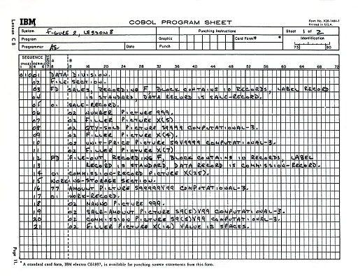
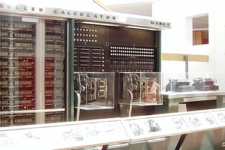

Fue una militar y científica estadounidense. Sus contribuciones a las ciencias de la computación desencadenaron al desarrollo del lenguaje de programación “COBOL”, uno de los primeros lenguajes de alto nivel.
Fue la creadora del primer compilador para un lenguaje de programación de alto nivel.
Fue una influencia muy importante en el desarrollo de COBOL, pues a pesar de no participar de manera tan activa en el desarrollo de este, ella fundó las bases y el enfoque que tendría el lenguaje.
Gracias a que fue pionera en los lenguajes de programación se convirtió en la primera programadora en utilizar la computadora Mark I (la computadora más poderosa de su momento).
